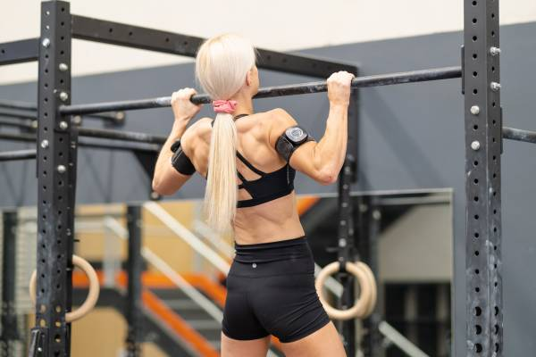
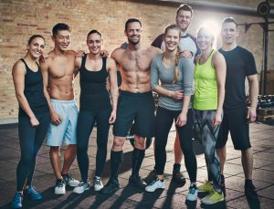
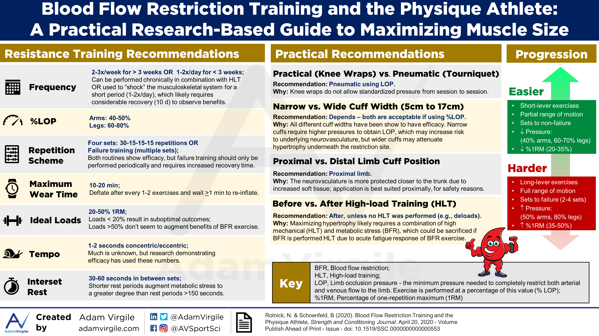
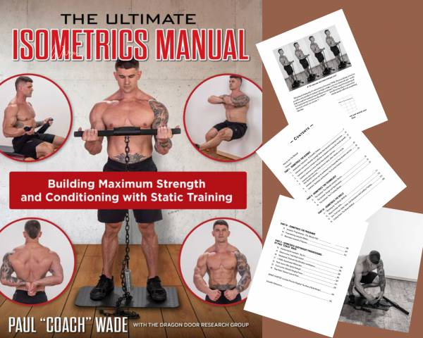

Blogs
Blood Flow Restriction (BFR) Cuffs For Boundary Pushers
When we think about fitness products paired with smartphone apps, the first thought that comes to mind is if this product will pair properly with the app on the smartphone. Thankfully, I can confidently say that SAGA fitness has done an excellent job designing its smart Blood Flow Restriction (BFR) cuffs.
If you’re preparing for competitions like the Crossfit Open, martial art tournaments, or would like to gain an edge in your training, this product is a must-try.
Let’s discuss the different components of this product and how it helped me improve my training efficiency.
Excellent Quality and User Feedback
The cuffs themselves are made of high-quality material. You can feel it as soon as you put it on your arms or legs.
The cuff inflates to match the settings you enter into the app, and you can hear it.
From a user experience point of view, it's a great way to give the user feedback that the cuffs adapt to the athlete’s desired settings. I mean, the fact that you can feel the cuffs tighten around your limbs is one thing, but how else would you be able to tell if it has stopped inflating?
I tried using the cuffs while working on my pull-ups and bar muscle-ups. The results were phenomenal. I was able to increase my reps after ten days of training. However, please keep in mind that you should research BFR training before using them.
The app will give you recommendations by their suggested settings, but I’m sure you can agree that we should try to make every training session count. You should also check out the infographic below from Brad Schoenfeld, author of Science and Development of Muscle Hypertrophy. Great summary of what BFR can and can't do for you (click image to go to source).
Easy-to-use App and an Intuitive User Interface
Designing an application takes a good amount of work.
But designing an intuitive and easy-to-use application takes work and attention to detail.
The design of the user interface is plain and minimalistic. This design allows the athlete/exerciser to accomplish tasks on the app intuitively. When I received the shipment package, it came with only the cuffs, USB charger, and Erin's note, the General Manager of SAGA fitness. There were no instructions. However, please don’t let this deter you from ordering the product.
It shows just how easy and intuitive the whole product is.
It was a seamless process to download the app, set up a profile, and finally, use the cuffs in training. Having an instruction manual would not make it any easier.
If You Love Pushing Boundaries
This is a product I would recommend for serious exercisers and athletes.
If you love pushing the boundaries of your limits, you will most likely enjoy this product as much as I do.
Picture this; I went from doing one bar muscle up to doing five in a row in a matter of 10 days.
But, I am by no means saying that this is guaranteed to happen for everyone who decides to purchase a set of BFR cuffs from the SAGA fitness website.
What I will say is that you will see noticeable results if you train consistently, educate yourself on BFR training, and finally, introduce these BFR cuffs to your training.
After all, I’m sure we can all agree that a weapon or device is only as good as the individual who wields it.
The Ultimate Isometric Exercise Guide
The Ultimate Isometrics Manual is a nerd's paradise, at least for this nerd. From the mind of Convict Conditioning author Paul Wade, and published by Dragon Door, this hefty 462 page book that is about as complete an overview of isometric training as you can get.
Isometrics is about easily accessible and yet outside of a dedicated group of practitioners, not something that gets much press. It's a shame because isometrics has broad applicability for all populations of strength trainees including novices and seniors.
That's because isometric exercises force you to stay in your lane. By that I mean that they are not like lifting a barbell or dumbbell in so far as you can't overload, or under load, an isometric set and the risk of injury is, overall, much lower than more traditional exercises.
Isometric exercise is only as effective as the effort and the effort can only be felt if you are properly positioned to create the tension demanded. That doesn't mean you can't screw up an isometric exercise but you have to be pretty motivated to get it wrong.
What is Isometric Exercise?
Isometric exercise relies solely on the creation of tension with concentric contraction of the muscle against an immovable object. That object may be a device like the isochain, it may be a door jamb, and it may be your own body.
Invariably, any discussion of isometrics will refer to the seminal study done by Hettinger and Muller in 1953 (Muscle capacity and muscle training). The German researchers found that a single daily effort of two-thirds a person's maximum effort for six seconds at a time for ten weeks increased strength by about five percent a week.
Melody Schoenfeld wrote on these pages that isometrics is working at standstill or the the act of using force against resistance without changing your muscle length. For example, holding a bicep curl at a 90-degree angle for 30 seconds.
Logan Christopher wrote about legendary strongman Alexander Zass who was a big proponent of isometric exercise who believed the secret of isometric training was that it stored energy instead of dissipating it, and that it allowed him to work against very strong resistance helping to build up his stamina.
Zass had little to no access to weightlifting equipment in his life. He was a strongman who bent bars and broke chains. Bruce Lee was also known for his isometric work, as noted in Bruce Lee's 3-Minute Workout by Shane Trotter.
Unpacking The Mysteries of Static Training
Let's get the biggest criticism of this book out the way: it's a little overwrought in promoting the Isochain, an expensive isometric training device that isn't being reveiwed here and isn't needed to enjoy this book or take advatange of it.
You'd think that Paul Wade, the guy behind no equipment workouts would be less inclined to push a piece of equipment, but to be honest, his publishers should have done a better job of addressing this one minor flaw of the book.
To put it in perspective, this ebook is just under ten dollars and has plenty of great information and exercises that don't need the Isochain. I'll be generous and give the Isochain infomercial about 50 pages of overexposure, which leaves about 400 pages of other stuff.
Otherwise, I stand by my nerding out statement. I have a reference for isometric training. I have enough information to make an intelligent decision about its efficacy, and I have plenty of examples of how to apply isometric exercises.
More importantly, there is enough information here to justify exploring how isometric training can help increase weight and reduce the chance of injury. I asked an older friend of mine, someone who is quite sedentary, to try 10 minutes a day of a set of isometric exercises that I had improvised for him during the lockdown, while he was working from home. Based on my sample of one, the impact of phenomenal. Whether it was the 10 minutes a day only part of the routine or the actual palpable increases in strength that he experienced, my friend was sold and actually go the book himself. Like everything else in the fitness industry, there are cycles, fads, and fashions. Isometric exercise isn't fashionable or faddish, but it may need to have a refresh cycle and demands some modern-day appreciation. Paul Wade's book may be all you need to freshen up your isometrics.
Tips
7 MOTIVATING GYM TIPS FOR BEGINNERS
-
BE PROUD
Before diving into the practical gym tips for beginners, remember that the most important exercise catalyst is confidence. Whether you're lifting 100 pounds or 1 pound, you should be proud of yourself for showing up at the gym at all! Don't be intimidated by others or scared to ask for help.
Remember that everyone at the gym was once in your shoes. Those first few workouts, no matter how "easy" they are in terms of physical intensity, are often the most mentally challenging. Be proud, remain confident and trust that your gym skills and fitness savvy will increase over time.
-
STAY STRONG
Beginners often flock to the treadmills and stationary cycles because these machines are easy for all ages and ability levels. But don't get stuck in a cardio rut — try incorporating at least two days of strength training into your weekly routine. If you aren't feeling ready to explore the weight room, remember that bodyweight exercises can be just as effective at building strength.
Not really sure where to start? Try one of Planet Fitness' unlimited, free fitness training sessions offered to all members through PE@PF. These small group sessions are led by certified trainers and can teach you basic weight-training and workout movements. Additionally, most Planet Fitness locations offer a 30-minute Express Circuit training option that can guide you through a full-body workout.
-
WORK HARD
If you're not sweating by the end of your workout, perhaps you aren't pushing yourself hard enough. Try to reach an "out of breath" state at least once during your workout by incorporating high-intensity movements like sprinting, jumping jacks, burpees or squat jumps.
-
ASK HOW
Instead of shying away from exercises or equipment you're unfamiliar with, ask a gym employee or fellow gym-goer for help. Utilize resources like ACE Fitness' exercise library and the CDC's workout videos for tips on form and technique. Another good idea is working with a certified trainer to help familiarize yourself with the gym layout and draft a workout plan.
-
EAT UP
Working out won't yield results if your diet isn't in check, too. Replace unhealthy foods with healthy alternatives and try to cut back on sugar. A good place to start is following the USDA's recommendation of filling at least half of your plate with fruits and vegetables.
It's a good idea to prepare before (and refuel after) every workout with high-protein snacks like nuts, yogurt, deli meat, hummus and cottage cheese. Of course, maintaining a balanced diet will help you meet your fitness goals, but it's also realistic to enjoy an indulgence here and there!
-
BE REALISTIC
Losing weight, gaining strength, boosting endurance and increasing flexibility are all long-term goals — so don't expect to reach ultimate strength in a single week. Be realistic about the goals you set for yourself. For example, see if you can add five more pounds to your shoulder press or shave ten seconds off of your mile time within a month.
-
REST AND REPEAT
Even the most experienced athletes appreciate the importance of rest after a hard workout. Try to get eight hours of sleep every night, take at least one rest day a week and always walk into the gym ready to repeat another solid workout. Once you get into a routine, you'll graduate from your "beginner" status in no time.
As always, please consult with a physician prior to beginning any exercise program.
TOP 10 TIPS FOR EXERCISE BEGINNERS
Getting started on a new exercise regime is a daunting prospect. You know it’ll hurt, you know you’ll have to drag yourself there on occasion and the prospect of spending your time sweating among all those toned and muscled Adonises is quite an intimidating one. So follow our top 10 tips for those gym beginners among you and you’ll find your workout goes without a hitch.
-
SET REALISTIC GOALS
It may take some time to get the results you want. It’s vital to break your ultimate goal down in to stages and set lots of smaller goals to keep you motivated along the way.
-
BE CONSISTENT
Results come through regular and consistent activity. Stick to your programme and avoid frequent stops and starts.
-
TOO MUCH TOO SOON
Do not increase the amount of exercise you do too soon. Increase what you’re doing by no more than 10% per week.
-
ACCEPT FEELINGS OF DISCOMFORT
When you first start exercising you’ll experience feelings of discomfort such as shortness of breath, sweating and aching muscles after exercising. Don’t worry, this is completely normal and everyone feels like this when they’re first starting out.
-
TRAIN WITH A FRIEND
Training with a friend not only keeps you motivated during the sessions themselves but will also make you less likely to miss a planned session as you’re unlikely to want to let down your friend.
-
WARM UP
Not warming up is a mistake many beginners make. Before any session ensure that you warm up thoroughly and mobilise the areas that you will be using during the workout. Furthermore, failure to warm up properly may increase the risk of injury.
-
TIME OF DAY
We are all different. Some of us rise early and some of us go to bed late. Exercise at the time when you feel that you have most energy.
-
WILL POWER
Don’t give up. All beginners have set backs on the way to achieving their goals. Accept them and use them to re-motivate yourself.
-
WATER
Ensure you drink plenty of water, before, during and after exercise, particularly if you are exercising in warm conditions or for long periods. Dehydration will result in a drop in performance and severe dehydration can be dangerous too.
-
TRY SOMETHING NEW
Keep things interesting by trying new exercises, workouts and activities to keep your programme fresh, keep challenging your body and preventing boredom.